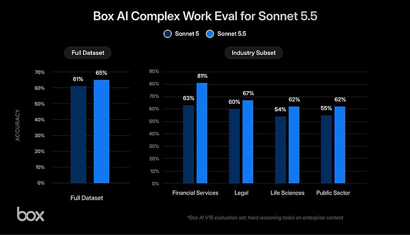
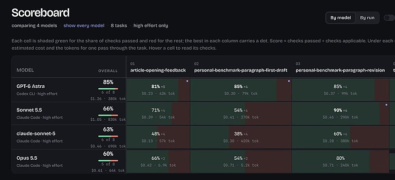

AI 日报 · 9月30日
DevDay 推出持续运行 Agent，模型选型进入任务账本
OpenAI DevDay 发布 dots 与 GPT‑6.1 Sol；官方文档给出持续任务边界和模型定价，Builder 实践与 GitHub 项目提供落地视角。
DevDay 2026
持续运行 Agent
GPT‑6.1 Sol
GitHub Trending
6
Builder 动态
5
今日上榜项目
4
官方与 RSS
1
公开视频
今日要点
深度对话
OpenAI DevDay 2026：从模型能力到长期任务
OpenAI 官方频道已发布 9 月 29 日 DevDay 完整主旨演讲。下面的产品细节以官方模型文档、安全说明及发布说明交叉核对；演讲中的演示不等于所有用户都已获得相同能力。
Dots 的工作界面
官方安全说明称 dots 拥有自己的云端电脑与浏览器，并可调用已连接工具、处理周期任务和后续跟进。
长期任务扩大授权边界
OpenAI 的评测说明指出，连续任务中授权范围可能变化；在其模拟测试里，增加中间任务后，部分中等严重程度的越界标记比例上升。该结果仅代表其披露的测试设置。
Sol 的开发者取舍
模型页将 GPT‑6.1 Sol 定位为复杂编码、电脑操作和专业工作的较低成本选项，并建议在自己的任务上与 Astra 比较。
观看完整演讲
视频由 OpenAI 官方 YouTube 频道发布；日报对具体型号、定价与安全边界仍以可查的官方文档为准。
RSS 精选
官方发布与订阅更新
建造者动态
Builder 观点与实践
Thibault Sottiaux｜调整 Pro 200 用量计算
Sottiaux 9 月 29 日说明 Pro 200 将重新向新订阅者开放，同时调整用量计算；按他的换算，新方案对应的 API 消费额度约为旧方案一半。这是他对订阅规则的说明，实际权益仍以官方页面为准。
Aaron Levie｜Box 内部评测 Sonnet 5.5
Levie 披露 Box Agent 在其复杂工作评测中，相比 Sonnet 5 总体准确率高 4 个百分点，完成交付约快 2.4 倍、token 少 12%。这属于 Box 自有任务集结果，不宜直接外推。

Thariq｜Prompt 已变成参考资料的组合
Thariq 认为单独展示 prompt 已不足以复现 Agent 工作，因为还依赖仓库、技能、案例和外部参考；这是他个人的工作方式观察。
Peter Yang｜用 Sonnet 5.5 制作游戏关卡
Yang 展示一个可玩的星际争霸风格关卡，说明使用了 Sketchfab 模型与 Suno 音乐；这是作者演示，不代表通用生成成功率。
Dan Shipper｜用个人任务评估写作模型
Shipper 分享自己的任务基准：他认为 Sonnet 5.5 在改稿上表现突出，但 Astra 仍是他最喜欢的写作模型。样本是其个人真实工作，结果不能当作通用排名。

GitHub Trending
今日上榜的开源项目


项目来自 9 月 30 日北京时间 GitHub Trending 当日列表，选取昨日未重点介绍的项目；星标与 Fork 为 上午 GitHub API 快照，数字会变化。
今日思考
持续运行的 Agent 要有可追溯的边界
今天的发布把模型价格、长期任务与云端执行放进同一张图。试用时，先选一项真实任务，记录完成质量、耗时和费用；再明确它可读哪些数据、能向谁发送消息、何时必须请人确认。长期运行会积累上下文，也会积累授权歧义。阅读 dots 安全评测 →
今日一问：若你的 Agent 明天继续这项工作，它应该在哪一步停下来征求确认？
今日一问：若你的 Agent 明天继续这项工作，它应该在哪一步停下来征求确认？
参考来源
OpenAI DevDay 2026 官方完整视频
GitHub：9 月 30 日 Trending
DevDay 把重点放在持续执行的 Agent
GPT‑6.1 Sol 进入开发者模型列表
AI前线｜LinkedIn 蒸馏方案取舍
AI前线｜Manus 与个人 Agent 竞争报道
Thibault Sottiaux｜调整 Pro 200 用量计算
Guillermo Rauch｜域名搜索开放免登录
Aaron Levie｜Box 内部评测 Sonnet 5.5
Thariq｜Prompt 已变成参考资料的组合
Peter Yang｜用 Sonnet 5.5 制作游戏关卡
Dan Shipper｜用个人任务评估写作模型
NVIDIA/OpenShell
t8y2/dbx
VectifyAI/PageIndex
rohitg00/ai-engineering-from-scratch
oblien/openship